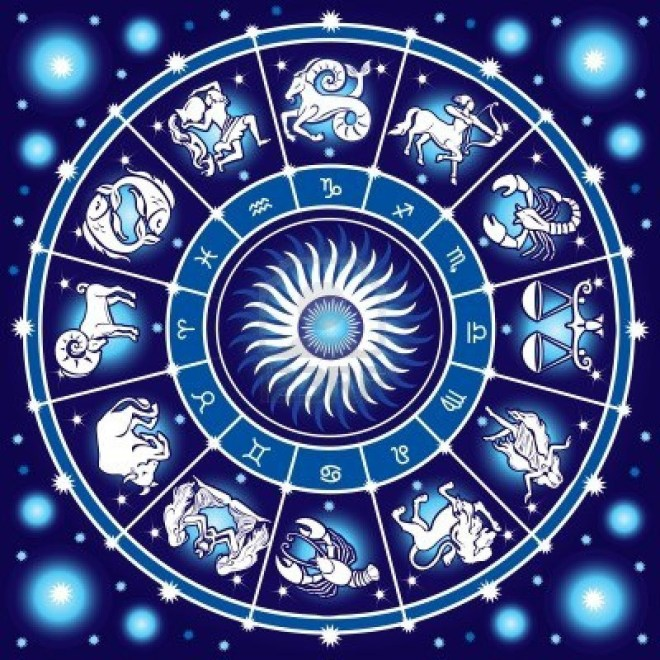

horóscopo se denomina un sistema de predicción del futuro basado en la posición de los astros y los signos del Zodiaco en un momento dado, y en la creencia de cómo esto influye en la vida de las personas.
La palabra, como tal, proviene del latín horoscŏpus, y esta a su vez del griego ὡροσκόπος (horoskópos), que significa ‘que observa la hora’.
Como tal, es un procedimiento adivinatorio muy popular, según el cual, cada persona pertenece a un signo del Zodiaco, el cual vendría a determinar ciertas características de la personalidad de cada quien. Como tal, existen doce signos zodiacales, relacionados con los elementos de la tierra, el aire, el agua y el fuego. Los signos son: Aries, Tauro, Géminis, Cáncer, Leo, Virgo, Libra, Escorpio, Sagitario, Capricornio, Acuario y Piscis.
